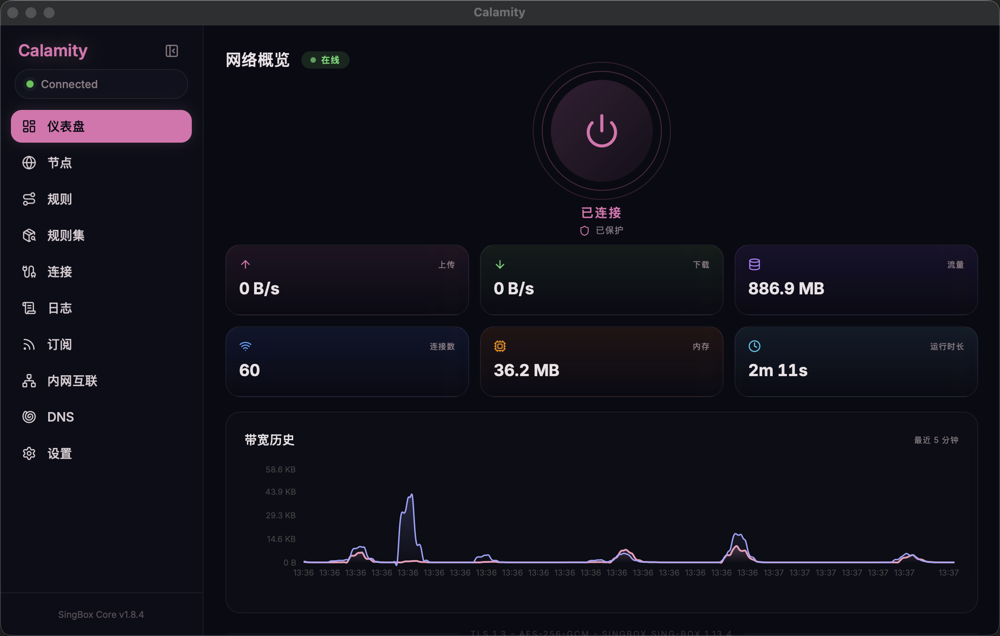
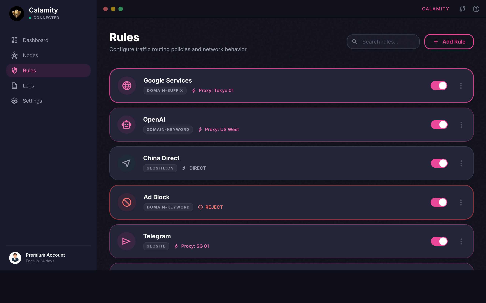
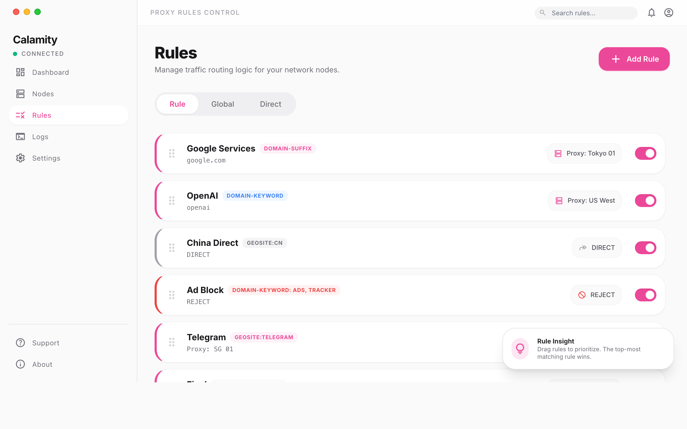
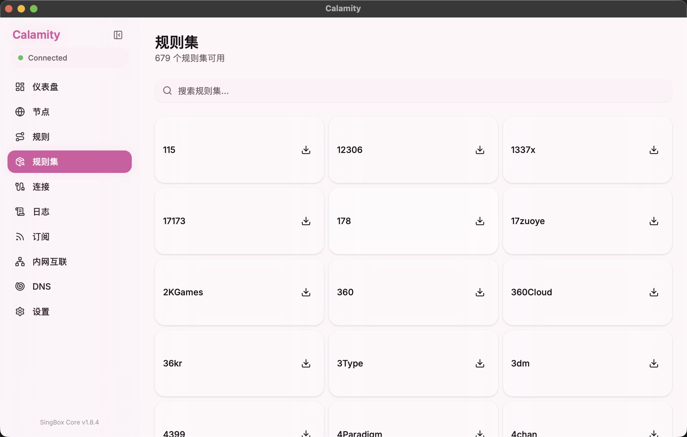
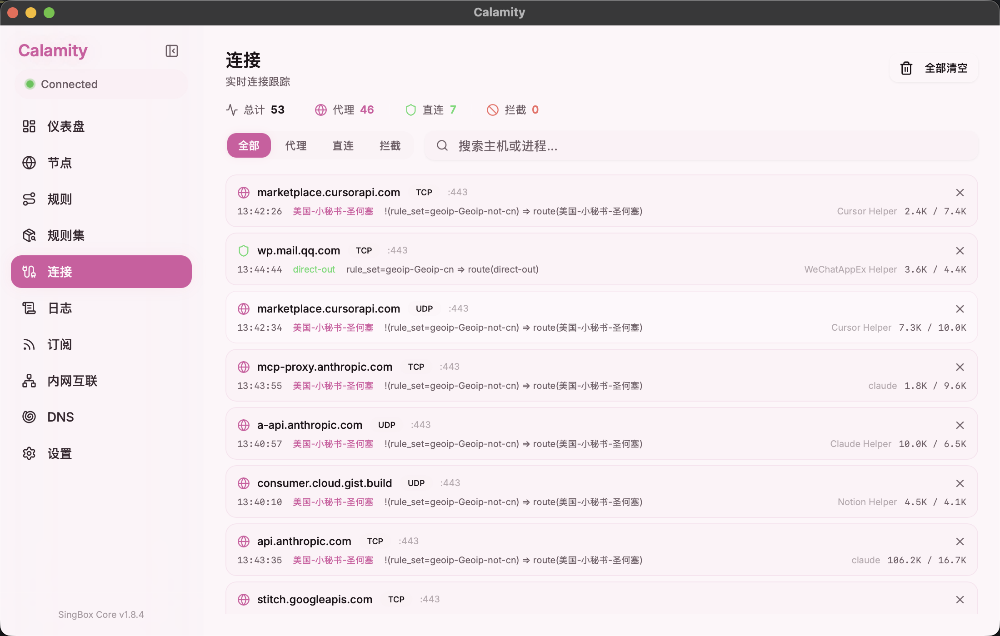
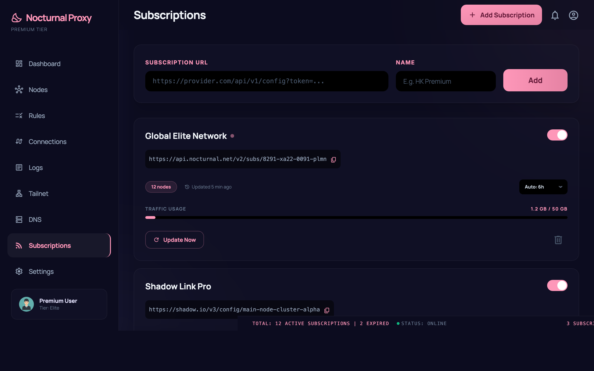
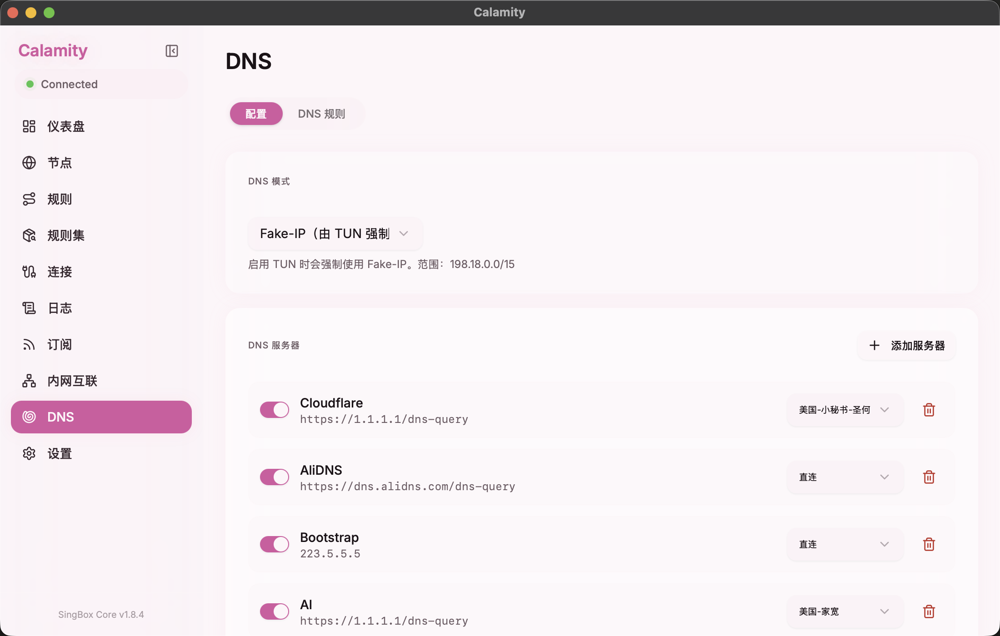
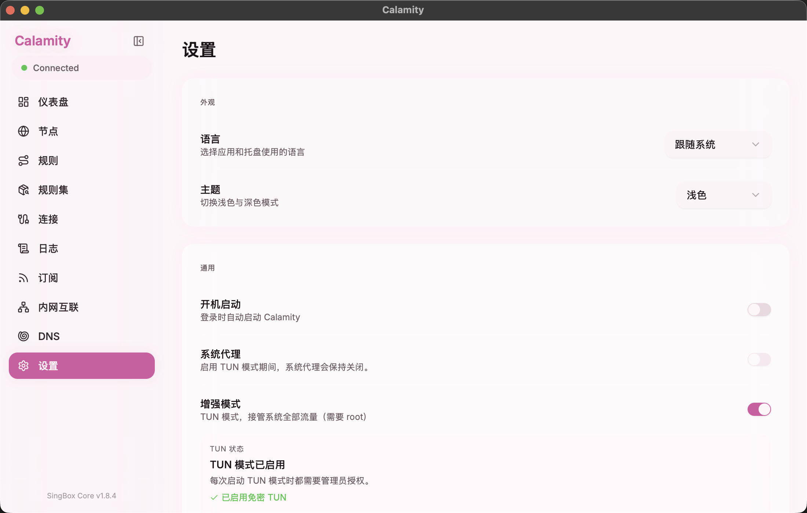
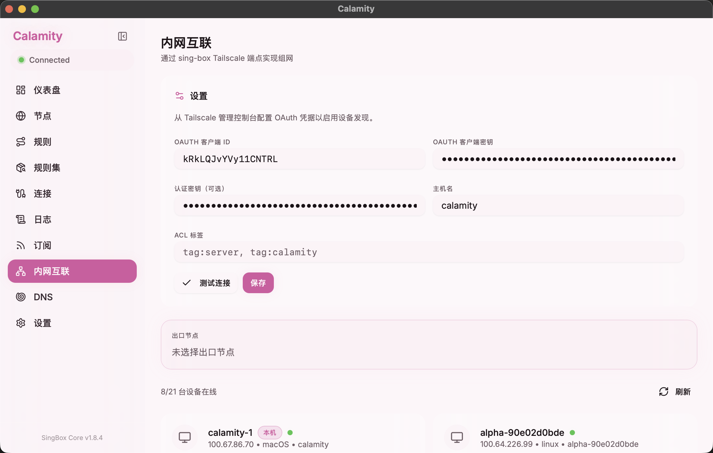
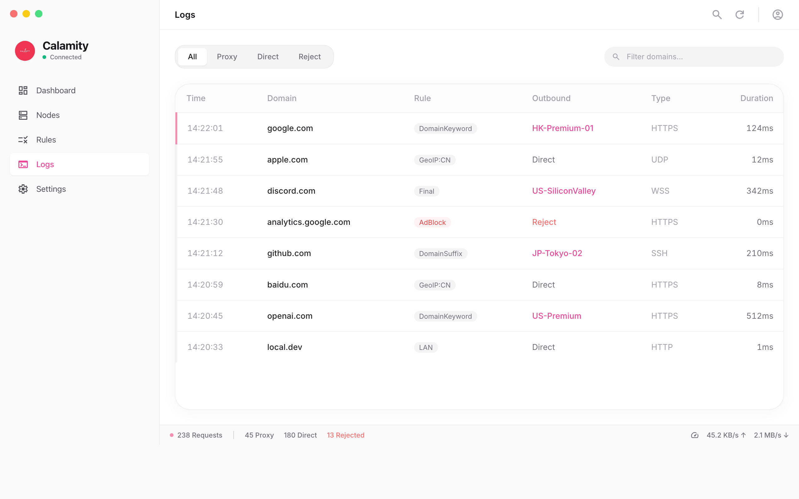

Calamity 使用手册
这份手册面向日常使用者，覆盖从安装启动到高级配置的完整操作流程。 内容按"先能用，再进阶"的顺序组织，每个章节均配有真实界面截图。
1. 启动与界面
了解 Calamity 的基本结构
Calamity 由主窗口和托盘窗口两部分组成。 主窗口用于完整配置和监控，托盘窗口用于快速开关和状态查看。

首次启动
- 从 Releases 下载最新
.dmg安装包，拖拽到 Applications 文件夹。 - 首次打开时，macOS 可能会阻止运行。右键选择"打开"以绕过 Gatekeeper，或在终端执行
xattr -cr /Applications/Calamity.app。 - 启动后，主窗口会自动加载当前配置并尝试启动 sing-box 核心。
- 关闭主窗口只是隐藏，不会退出应用。需要在托盘中点击"退出"才会完整清理并退出。
界面结构
左侧边栏包含所有功能页面的入口：
| 页面 | 功能说明 |
|---|---|
| 仪表盘 | 总览连接状态、实时速率、流量统计和带宽历史图表 |
| 节点 | 管理代理节点和分组，切换活跃节点，测试延迟 |
| 规则 | 配置路由规则，定义流量匹配和出口策略 |
| 规则集 | 浏览和安装社区规则集 |
| 连接 | 实时查看所有活跃连接的详细信息 |
| 日志 | 查看 sing-box 核心和应用的运行日志 |
| 订阅 | 管理节点订阅源，支持自动更新 |
| 内网互联 | Tailscale 集成，管理 Mesh VPN 设备和节点 |
| DNS | 配置 DNS 服务器、模式和分流规则 |
| 设置 | 语言、主题、代理端口、TUN 模式等全局配置 |
2. 仪表盘
总览连接状态和实时流量
仪表盘是打开应用后看到的第一个页面，提供以下关键信息：
- 连接状态 — 中央的电源按钮图标显示当前连接状态（已连接/已断开），下方显示"已保护"标识。
- 实时速率 — 上传和下载的实时速度，以 KB/s 或 MB/s 显示。
- 流量统计 — 当前会话的总流量消耗。
- 连接数 — 当前活跃的连接数量。
- 内存占用 — sing-box 核心的内存使用量。
- 运行时长 — 当前连接已持续的时间。
- 带宽历史 — 最近 5 分钟的上传和下载速率图表，直观展示流量变化趋势。
3. 节点管理
管理代理节点和分组

基本操作
- 在侧边栏点击"节点"进入节点管理页面。页面顶部会显示当前活跃节点名称。
- 使用
Proxy/Test标签切换代理节点和测试节点视图。 - 使用区域筛选标签（All、HK、JP、US、SG、KR、DE、GB）快速过滤不同地区的节点。
- 点击任意节点卡片即可将其设为活跃节点，应用会自动重启 sing-box 并切换连接。
- 点击右上角"测试全部"按钮可对所有节点进行批量延迟测试。
节点分组
节点支持按组组织管理。点击右上角的"新分组"按钮可以创建新的节点分组。
分组支持普通分组和 urltest 自动测速分组两种类型。
连接稳定性
页面下方的连接稳定性图表会展示当前活跃节点近期的延迟波动情况， 包括平均延迟和抖动值，帮助你判断节点质量。
如果切换节点后出现连接失败，检查节点是否仍然可用。可以先执行一次延迟测试确认节点存活。
4. 规则配置
定义流量路由策略

规则概述
规则页面用于定义流量的路由策略。每条规则包含匹配条件和出口选择， 流量按从上到下的顺序匹配，命中后走对应出口。未命中任何规则的流量会走"最终出口"。
操作步骤
- 点击右上角"添加规则"按钮新建路由规则。
- 设置规则的匹配类型：支持
geoip（按地理 IP）、geosite（按站点分类）、process-path（按进程路径）、rule-set（引用规则集）等。 - 选择规则的出口策略：可以指定某个代理节点、
直连或拒绝。 - 使用每条规则右侧的开关来启用或禁用单条规则。
- 使用编辑按钮（粉色铅笔图标）修改规则，使用删除按钮（红色垃圾桶图标）删除规则。
最终出口
页面顶部的"最终出口"设置决定了未匹配到任何规则的流量走向。 可以设置为直连、某个代理节点或拒绝。
规则的排列顺序很重要 — 越靠前的规则优先级越高。如果两条规则都能匹配某个请求，排在前面的规则会生效。
5. 规则集市场
一键安装社区规则集

规则集市场提供了大量预配置的规则集，可以快速添加常用站点和服务的路由规则， 无需手动逐条配置。
使用方法
- 点击侧边栏"规则集"进入市场页面，当前可用规则集数量会显示在页面标题旁。
- 使用搜索框按名称搜索规则集（如 "Google"、"Twitter"、"Telegram" 等）。
- 找到需要的规则集后，点击下载图标即可一键安装到本地。
- 安装完成后，可以在规则页面中通过
rule-set类型引用已安装的规则集。
6. 连接监控
实时查看活跃连接详情

连接页面实时展示所有通过 sing-box 代理的网络连接。你可以看到每条连接的目标地址、 协议类型、匹配的规则、使用的出口节点以及数据传输量。
页面功能
- 连接统计 — 页面顶部显示总连接数，以及代理、直连、拒绝的分类统计。
- 筛选标签 — 可按"全部"、"代理"、"直连"、"拒绝"分类查看。
- 搜索过滤 — 支持按主机名或进程名搜索特定连接。
- 连接详情 — 每条连接显示目标 IP/域名、端口、协议（TCP/UDP）、匹配规则、出口节点、上下行流量。
- 关闭连接 — 点击连接右侧的 × 按钮可以主动断开单条连接。
- 全部清空 — 右上角的"全部清空"按钮可以一次断开所有连接。
7. 订阅管理
添加和更新节点订阅源

添加订阅
- 在页面顶部的输入框中粘贴订阅地址（URL）。
- 在右侧的"名称"输入框中为订阅起一个便于识别的名字。
- 点击粉色"添加"按钮完成添加。
管理订阅
- 启用/禁用 — 使用订阅名称右侧的开关控制订阅是否生效。
- 手动更新 — 点击"立即更新"按钮手动拉取最新节点列表。
- 全部更新 — 点击右上角"全部更新"一次性更新所有订阅。
- 自动更新 — 每个订阅可以独立设置自动更新间隔（如 12h、24h）。
- 订阅信息 — 显示节点数量、上次更新时间等信息。
更新订阅后，建议检查当前活跃节点是否仍然存在于更新后的节点列表中。如果节点被移除，需要重新选择活跃节点。
8. DNS 配置
管理 DNS 服务器和分流规则

DNS 页面分为"配置"和"DNS 规则"两个标签页。配置页管理 DNS 模式和上游服务器， 规则页管理域名级别的 DNS 分流。
DNS 模式
页面顶部可选择 DNS 模式。当 TUN 模式开启时，会强制使用 Fake-IP 模式，
范围为 198.18.0.0/15。
DNS 服务器管理
- 点击"添加服务器"按钮新增 DNS 上游。
- 支持 UDP、DoH（
https://）、DoT 等多种协议。 - 为每个 DNS 服务器指定出口节点 — 可以选择直连或通过代理查询。
- 使用左侧开关启用或禁用单个 DNS 服务器。
- 点击红色垃圾桶图标删除不需要的服务器。
DNS 配置直接影响域名解析路径。如果配置不当可能导致无法正常上网。 建议至少保留一个可靠的 DNS 服务器（如 Cloudflare 的 1.1.1.1 或 AliDNS）。
9. TUN 模式
系统级流量接管

TUN 模式通过创建虚拟网络接口来接管系统层所有流量，比系统代理覆盖范围更广。 适用于需要让所有应用（包括不支持代理设置的应用）都走代理的场景。
启用步骤
- 进入"设置"页面，找到"增强模式"选项。
- 开启增强模式开关（TUN 模式会接管系统全部流量，需要 root 权限）。
- 首次启用时需要完成管理员授权，输入系统密码。
- 启用成功后会显示"TUN 模式已启用"和"已启用免密 TUN"状态。
开启 TUN 模式后，系统代理会自动关闭。如果只需要浏览器和特定程序走代理， 优先使用系统代理模式；如果需要完整接管系统流量再启用 TUN。
退出行为
退出应用时，Calamity 会自动停止 sing-box 进程并释放 TUN 接口， 确保系统网络恢复正常状态。
↑ 返回顶部10. 网关模式
透明代理网关 — 让局域网设备共享代理
开启网关模式后，Calamity 会将这台 Mac 变成一个透明代理网关。局域网内的其他设备（手机、电视、游戏机等）只需将网关指向本机 IP、DNS 设为 198.18.0.2，即可自动走代理，无需在每台设备上单独配置。
工作原理
- IP 转发 — 启用 macOS 内核的 IP forwarding，让本机可以转发其他设备的流量
- pf route-to — 通过 macOS 防火墙（pf）将转发的流量强制路由到 sing-box 的 TUN 接口
- Fake-IP DNS — 客户端 DNS 设为
198.18.0.2，sing-box 通过 Fake-IP 实现零延迟域名解析和智能分流 - Tailscale SNAT — 访问 Tailscale 节点的流量自动 SNAT 为本机 Tailscale IP，确保回程路由正确
- MSS 钳位 — 当 Tailscale 要求 MTU 1280 时，自动钳位 TCP MSS 避免分片
启用步骤
- 进入设置页面，确保已安装 TUN sudoers（点击"安装 sudoers 权限"按钮）。
- 打开"网关模式"开关。Calamity 会自动启用 TUN 模式、允许局域网连接、配置 pf 规则。
- 记下本机的局域网 IP（通常为 192.168.x.x）。
- 在其他设备的 Wi-Fi 设置中：
- 将网关/路由器设为本机 IP（例如
192.168.31.159） - 将DNS 设为
198.18.0.2（sing-box Fake-IP 地址，不要设为本机 IP） - 子网掩码
255.255.255.0，IP 与 Mac 同网段
- 将网关/路由器设为本机 IP（例如
- 打开浏览器测试访问，确认流量正常代理。
替代方式
也可以在路由器的 DHCP 设置中将网关地址改为本机 IP、DNS 改为 198.18.0.2，所有设备自动生效。
Tailscale 访问
如果启用了 Tailscale 集成，局域网设备也可以通过网关访问 Tailscale 网络中的其他节点（100.x.x.x）。 Calamity 会自动检测 Tailscale 接口并配置 SNAT 规则，确保远端节点能正确回包。
为什么 DNS 必须设为 198.18.0.2？
sing-box 的 Fake-IP 机制只对经过 TUN 接口的 DNS 查询生效。客户端将 DNS 设为 198.18.0.2 后，
DNS 查询会通过 pf route-to 规则进入 TUN，sing-box 拦截后返回 Fake-IP 地址，后续流量也走 TUN 由 sing-box 代理。
如果 DNS 设为 Mac 的局域网 IP，DNS 查询不经过 TUN，sing-box 无法介入，流量将无法被正确代理。
防休眠
网关模式启用后，Calamity 会自动阻止系统休眠（包括合盖休眠），确保局域网设备的网络不会因 Mac 休眠而中断。 关闭网关模式或退出时会自动恢复正常休眠行为。
网关模式同时代理本机和局域网设备的流量。关闭网关模式或退出 Calamity 时，IP 转发、pf 规则和防休眠设置会自动清理。
首次开启前需要重新安装 sudoers 权限，确保 sysctl、pfctl 和 pmset 命令包含在免密列表中。
10.5 规则同步 (BGP)
通过 Tailscale 网络在多个 Calamity 实例之间同步路由规则
概述
如果你有多台 Mac 都安装了 Calamity，并且通过 Tailscale 组网，可以使用规则同步功能将一台设备上的路由规则拉取到另一台。 底层使用 BGP（Border Gateway Protocol）协议通信，通过自定义 Address Family 编码规则数据。
使用步骤
- 确保两台设备都已连接 Tailscale
- 在侧边栏点击「规则同步」
- 打开「启用规则同步」开关 — 这会在 Tailscale IP 上启动 BGP 服务（端口 179）
- 点击「扫描 Tailnet」自动发现其他 Calamity 设备，或手动输入 Tailscale IP 添加节点
- 点击节点旁的「拉取规则」按钮
- 查看规则差异预览（新增 / 删除 / 修改），确认后点击「应用变更」
技术细节
- 所有实例使用固定私有 ASN 64512，采用 iBGP 模式
- 规则编码为自定义 AFI=99 / SAFI=1 的 TLV 格式 NLRI
- BGP speaker 仅绑定 Tailscale 网络接口（100.x.x.x），外网不可达
- Tailscale 提供端到端加密，无需额外认证
- 仅同步路由规则（rules.json），不包括节点、订阅、DNS 等其他配置
11. Tailscale 集成
Mesh VPN 设备管理

Calamity 集成了 Tailscale Mesh VPN，可以直接在客户端内管理 Tailscale 网络设备和 Exit Node。
1. 创建 ACL Tag
OAuth client 必须绑定 tag 才能获取 auth key。需要先在 ACL 中定义 tag：
- 进入 Tailscale ACL 编辑器（Settings → Access controls）。
- 在
tagOwners中添加一个 tag，例如："tagOwners": { "tag:calamity": ["autogroup:admin"] } - 保存 ACL 配置。
2. 获取 OAuth 凭证
- 进入 Tailscale 管理后台（Settings → OAuth clients）。
- 点击 "Generate OAuth client"，勾选以下权限：
devices:read— 读取设备列表routes:read— 读取路由信息（用于 Exit Node 列表）
- 在 Tags 中选择刚创建的
tag:calamity。 - 生成后复制 Client ID 和 Client Secret（Secret 只显示一次，请妥善保存）。
3. 在 Calamity 中配置
- 进入 Tailscale 页面，将 OAuth Client ID 和 Secret 粘贴到对应输入框，点击"测试连接"验证。
- 验证通过后点击"保存"，设备列表会自动加载，显示 Tailscale 网络中的所有设备。
- 点击设备右侧的"设为 Exit Node"按钮，该设备会成为流量出口。
- Calamity 会自动将 Tailscale 的路由和 DNS 规则注入 sing-box 配置中。
Tailscale 的 100.64.0.0/10 网段流量会自动通过专用出口路由，不受其他规则影响。
OAuth Secret 仅在创建时显示一次。如果丢失需要重新生成新的 OAuth client。
12. 设置
全局配置选项
外观设置
- 语言 — 支持跟随系统、简体中文和 English 三个选项。
- 主题 — 支持浅色和深色两种主题，可跟随系统设置。
通用设置
- 开机启动 — 登录时自动启动 Calamity。
- 系统代理 — 启用后 TUN 模式关闭时，系统代理会保持关闭状态。
- 增强模式 — 即 TUN 模式，接管系统全部流量（需要 root 权限）。
13. CLI 与守护进程 (Linux)
在 Linux 上通过命令行管理 Calamity
从 v0.3.0-beta 起，Calamity 支持 Linux 平台。Linux 版本采用无界面守护进程 + CLI 架构：
calamityd 作为后台服务运行，calamity 命令行工具通过 Unix 域套接字与之通信。
安装方式
提供 deb、rpm、pacman、tarball 四种格式，支持 x86_64 和 aarch64 架构。所有包均包含 calamityd、calamity 以及 systemd 服务单元。
systemd 集成
- 启用并启动 —
sudo systemctl enable --now calamityd - 查看服务状态 —
systemctl status calamityd - 查看日志 —
journalctl -u calamityd -f - 重启服务 —
sudo systemctl restart calamityd
CLI 命令概览
CLI 通过 Unix 域套接字与守护进程通信，支持以下命令：
- calamity start / stop / restart — 控制 sing-box 核心的启动与停止
- calamity status — 显示运行状态、流量统计、当前模式
- calamity mode [direct|rule|global] — 切换代理模式
- calamity node list / select — 查看和切换节点
- calamity rule list / add / remove — 管理路由规则
- calamity sub update [--all] — 更新订阅
- calamity config — 查看和修改配置
- calamity bgp — BGP 规则同步管理
- calamity tailscale — Tailscale 集成管理
Linux 网关模式
Linux 上的网关模式使用 nftables 进行流量重定向（macOS 上使用 pf）。 启用网关模式后，局域网内其他设备将本机设为网关即可代理所有流量。
平台抽象
核心逻辑位于 calamity-core 共享库中，通过平台抽象层适配不同操作系统：
- macOS — pf（包过滤）、networksetup（系统代理设置）
- Linux — nftables（包过滤）、gsettings（GNOME 代理设置）
14. 日志与排障
诊断连接问题

日志功能
- 级别筛选 — 支持按"全部"、"调试"、"信息"、"警告"、"错误"分类查看。
- 搜索过滤 — 使用搜索框过滤包含特定关键词的日志。
- 自动滚动 — 页面底部可开启自动滚动，实时跟踪最新日志。
- 清空日志 — 右上角"清空"按钮可清除所有日志记录。
常见排障步骤
- 确认 sing-box 核心是否已成功启动 — 日志中应看到
[calamity] connected to sing-box信息。 - 确认当前是否有活跃节点 — 如果没有选择节点，即使 sing-box 运行中也无法代理。
- 检查规则配置 — 确认"最终出口"和各条规则的出口是否符合预期。
- 检查 DNS 配置 — 确认 DNS 模式和上游服务器是否配置正确。
- 如使用 TUN 模式，确认管理员授权是否已通过，以及退出后 TUN 接口是否正常释放。
如果遇到连接超时或不通的情况，可以尝试：切换节点 → 更新订阅 → 检查规则 → 查看日志中的错误信息。